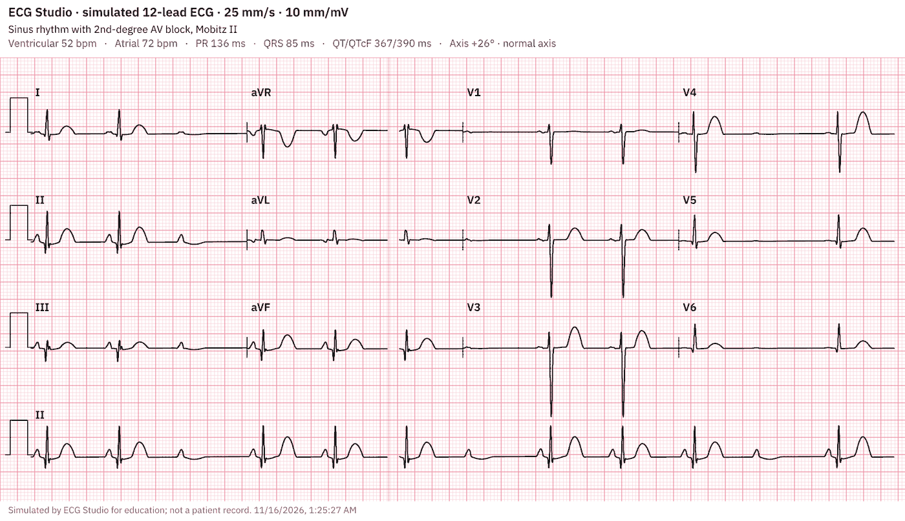

ECG library › Conduction blocks
Second-degree AV block, Mobitz II
Mobitz type II second-degree AV block is the sudden failure of a P wave to conduct with no warning: the PR interval stays the same before and after the dropped beat. The block is below the AV node and can progress to complete heart block.

What the simulator reads
Sinus rhythm with 2nd-degree AV block, Mobitz II
Ventricular 52 bpm · Atrial 72 bpm · PR 136 ms · QRS 85 ms · QT/QTcF 367/390 ms · Axis +26° · normal axis
ECG criteria
- Constant PR interval in the conducted beats (normal or prolonged)
- Intermittent P waves not followed by a QRS, with no PR lengthening beforehand
- The pause equals exactly two P–P intervals
- The QRS is often wide (coexisting bundle branch or fascicular block)
Why it looks like this
The block is in the His bundle or the bundle branches, which conduct on an all-or-nothing basis rather than slowing down first. It reflects structural disease of the conducting system (fibrosis, anterior infarction, surgery) and is an indication for pacing.
Differential diagnosis
- Mobitz I (progressive PR lengthening)
- Non-conducted premature atrial beats
- 2:1 AV block
Try it yourself
Block the His bundle in the Blocks tab and compare the PR intervals with a Wenckebach block at the AV node. In ECG Studio the 12-lead ECG is calculated from the electrical activity of a 3D heart as you watch, so you can see which part of the heart makes each wave.
More conduction blocks
- First-degree AV block
- Second-degree AV block, Mobitz I (Wenckebach)
- 2:1 AV block
- Third-degree (complete) heart block
- Left bundle branch block
- Right bundle branch block
- Left anterior fascicular block
- Left posterior fascicular block
- Sinoatrial exit block
ECG Studio is an educational simulator, not a medical device. Its ECGs are computed by a model of the heart, not recorded from patients; some features are simplified for teaching. Do not use them for diagnosis or treatment. Created by Thomas Liou. © 2026.